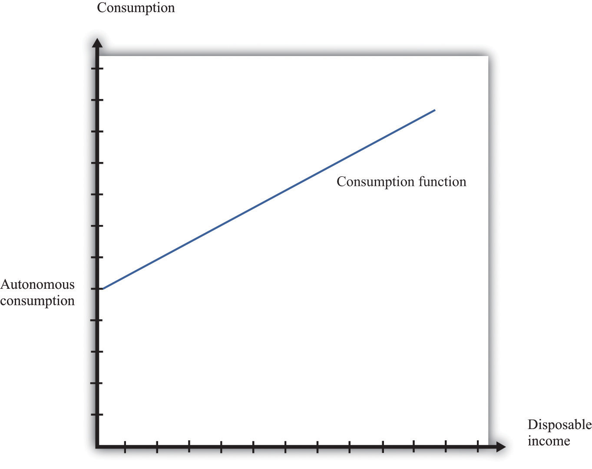

The consumption function is a relationship between current disposable income and current consumption. It is intended as a simple description of household behavior that captures the idea of consumption smoothing. We typically suppose the consumption function is upward-sloping but has a slope less than one. So as disposable income increases, consumption also increases but not as much. More specifically, we frequently assume that consumption is related to disposable income through the following relationship:
consumption = autonomous consumption + marginal propensity to consume × disposable income.A consumption function of this form implies that individuals divide additional income between consumption and saving.
Figure 31.25 "The Consumption Function" shows this relationship.
Figure 31.25 The Consumption Function
In symbols, we write the consumption function as a relationship between consumption (C) and disposable income (Yd):
C = a + bYdwhere a and b are constants. Here a represents autonomous consumption and b is the marginal propensity to consume. We assume three things about a and b:
The first assumption means that even if disposable income is zero (Yd = 0), consumption will still be positive. The second assumption means that the marginal propensity to consume is positive. By the third assumption, the marginal propensity to consume is less that one. With 0 < b < 1, part of an extra dollar of disposable income is spent.
What happens to the remainder of the increase in disposable income? Since consumption plus saving is equal to disposable income, the increase in disposable income not consumed is saved. More generally, this link between consumption and saving (S) means that our model of consumption implies a model of saving as well.
Using
Yd = C + Sand
C = a + bYdwe can solve for S:
S = Yd − C = −a + (1 − b)Yd.So −a is the level of autonomous saving and (1 − b) is the marginal propensity to save.
We can also graph the savings function. The savings function has a negative intercept because when income is zero, the household will dissave. The savings function has a positive slope because the marginal propensity to save is positive.
Economists also often look at the average propensity to consume (APC), which measures how much income goes to consumption on average. It is calculated as follows:
APC = C/Yd.When disposable income increases, consumption also increases but by a smaller amount. This means that when disposable income increases, people consume a smaller fraction of their income: the average propensity to consume decreases. Using our notation, we are saying that using C = a + bYd, so we can write
APC = a/Yd + b.An increase in disposable income reduces the first term, which also reduces the APC.